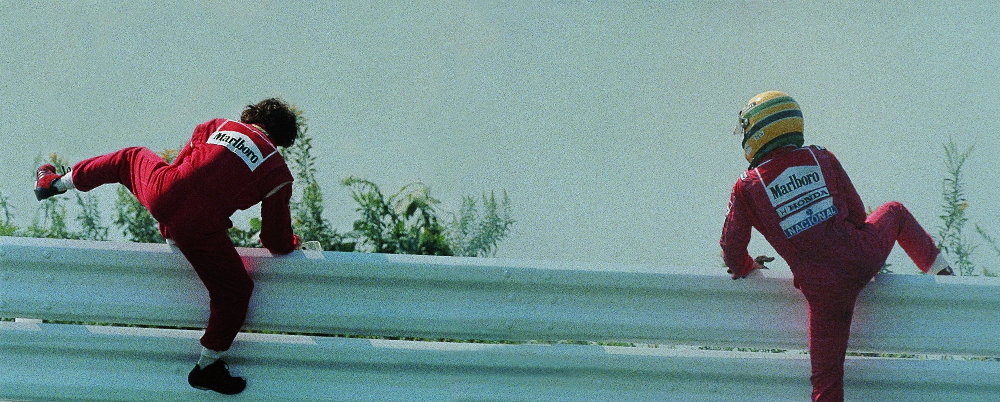
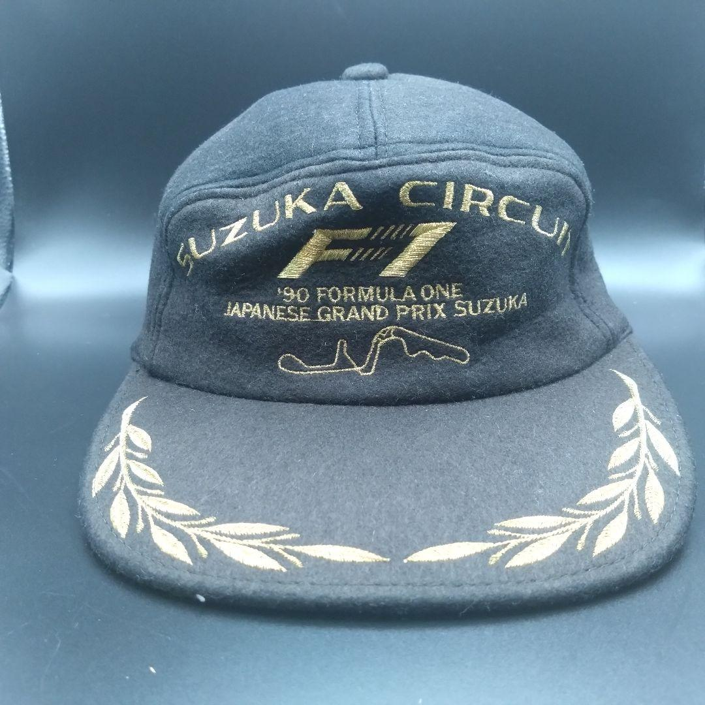

Suzuka
cobrou
duas vezes
Em 1989 eles dividiam o mesmo box. Em 1990 já eram inimigos declarados.
Senna e Prost deixam a pista por lados opostos do guard-rail, ainda com capacete. Foto: arquivo, autoria não identificada.
Dados da matéria
CircuitoSuzuka, Mie
ProvasGP do Japão, 1989 e 1990
Páginas32 a 37
Arrasta →
NipponSpeed Co.
Abertura
32

As duas McLaren travadas uma na outra depois do toque na chicane. Suzuka, 1989. Foto: arquivo, autoria não identificada.
O mesmo
box
Senna e Prost brigavam pelo título correndo pela mesma equipe. Os dois de McLaren, com o mesmo carro. Na chicane, Prost fechou a porta e os dois bateram.
Na pista
SennaMcLaren
ProstMcLaren
OndeChicane
NipponSpeed Co.
1989 · A corrida
33
Venceu na pista,
perdeu na mesa

Os comissários empurram a McLaren de volta para a corrida, na saída da chicane. Suzuka, 1989. Foto: arquivo, autoria não identificada.
Senna voltou empurrado pelos comissários, cortou a chicane e ganhou a corrida. Horas depois a direção de prova tirou a vitória dele. O título foi pro francês.
Na pistaPassou primeiro
Na mesaSem a vitória
TítuloProst
NipponSpeed Co.
1989 · A mesa
34

McLaren e Ferrari lado a lado na entrada da primeira curva. Suzuka, 1990. Foto: arquivo, autoria não identificada.
A conta
chegou
Prost agora corria pela Ferrari, e era ele que precisava vencer. Largada, primeira curva, e Senna não tirou o pé. Os dois pararam na brita juntos, e o bicampeonato estava decidido antes da segunda curva.
Na pista
SennaMcLaren
ProstFerrari
OndeCurva 1
NipponSpeed Co.
1990 · A conta
35
Ele mesmo
contou
Senna admitiu que a batida na primeira curva foi de propósito, resposta ao que tinham feito com ele em 1989. Até hoje a arquibancada se divide entre quem chama de justiça e quem chama de vingança.
Justiça ou vingança: a arquibancada nunca resolveu.
De propósito
A conta, ano a ano
1989Vence em Suzuka e perde a vitória na mesa. O título vai pro francês.
1990Não tira o pé na primeira curva. Os dois na brita, bicampeonato decidido.
1991Conta que a batida foi de propósito, resposta ao que fizeram em 1989.
NipponSpeed Co.
1991 · A admissão
36

Boné oficial do GP do Japão de 1990, com o traçado de Suzuka na frente. Foto: acervo Nippon Speed Co.
Boné oficial
GP do Japão
1990
A peça
Temporada1990
DetalheTraçado bordado em dourado
Na abaCoroa de louros
OrigemGarimpo no Japão
Da temporada em que a conta foi acertada. Traz o traçado de Suzuka bordado em dourado e a coroa de louros na aba.
Peças com história assim, garimpadas no Japão, aparecem toda semana no nosso grupo.link na bio · @nipponspeedco
NipponSpeed Co.
Acervo
37